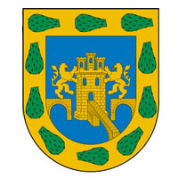

El Distrito Federal es la capital y sede de los poderes federales de los Estados Unidos Mexicanos. Se trata de una entidad federativa de México que no forma parte de los 31 estados mexicanos, pero pertenece a la Federación, que en conjunto conforman las 32 entidades federativas de la nación. La Ciudad de México es el núcleo urbano más grande del país, así como el principal centro político, académico, económico, financiero, empresarial y cultural. La Ciudad de México tiene un PIB de 470 mil millones de dólares, lo que la convierte en la octava ciudad más rica del mundo. Catalogada como ciudad global, la Ciudad de México es uno de los centros financieros y culturales más importantes de América. El crecimiento de la ciudad es uno de los más veloces a nivel global. El 18 de noviembre de 1824, dentro de un régimen federal, es creado el Distrito Federal en torno a la Ciudad de México para albergar la capital.
